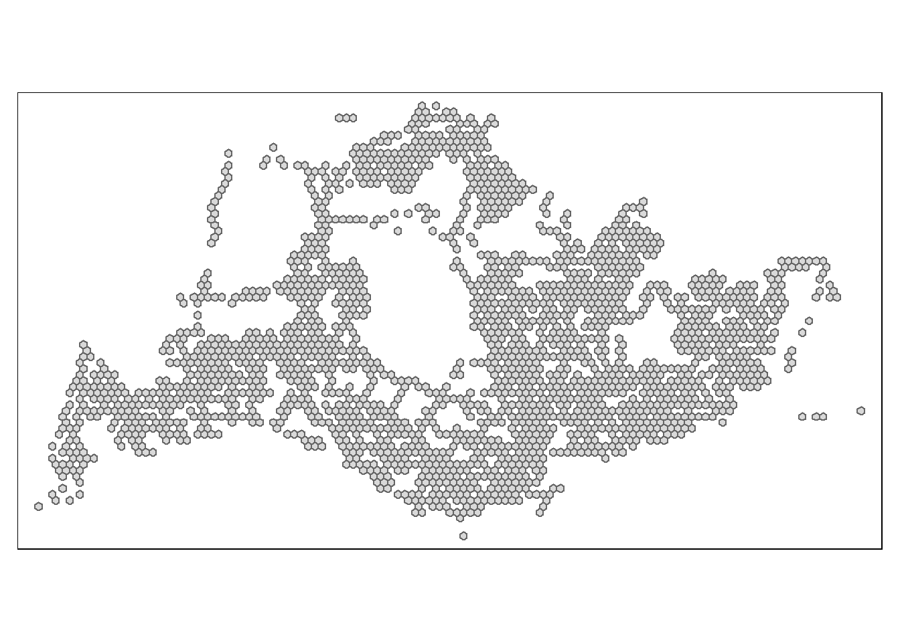
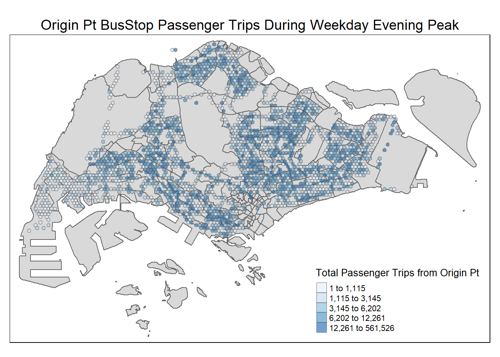
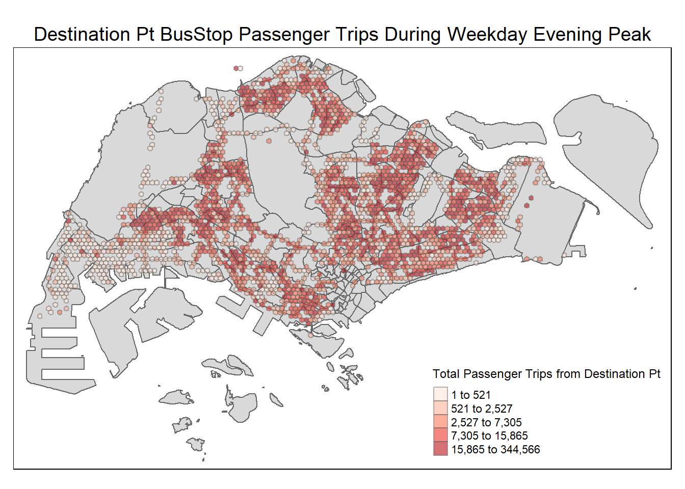
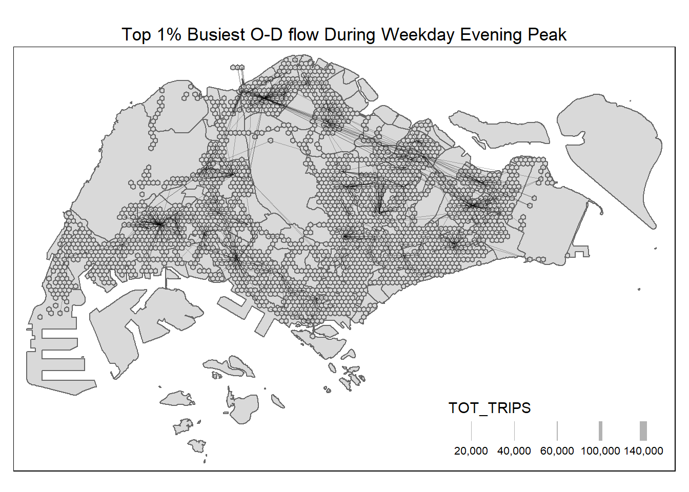
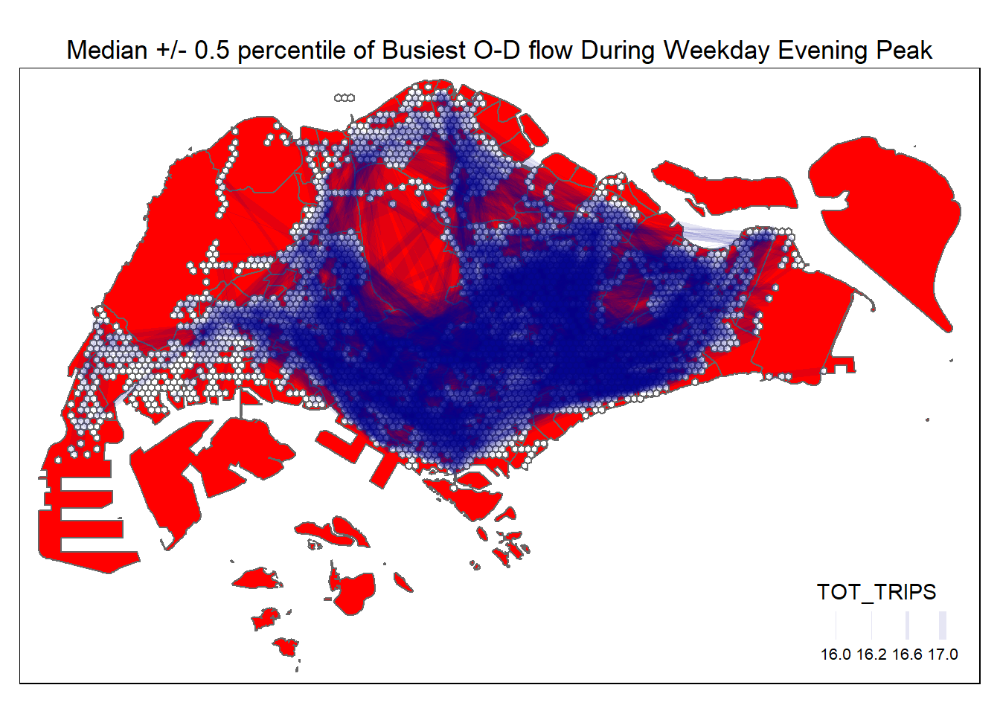
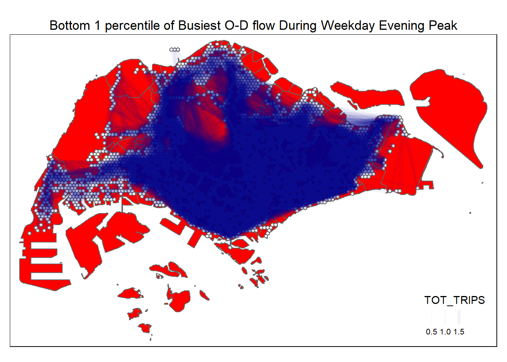

pacman::p_load(tmap, sf, sp, tidyverse, knitr, reshape2, stplanr) # plotly, zoo, Kendall,sfdep,spdep,Take-home_Ex2
Introduction
The success of Singapore’s public transport is commonly recognised as 1 of the quintessential indicator of its rapid growth and prosperity since her independence in 1965. It comprises of both public buses as well as mass rapid transport (MRT) trains. While the MRT network has been expanding across the many zones within Singapore, the bus network remains the most option accessible and reliable option amongst the two.
Thus, the utilisation pattern of buses are of key importance to multiple aspects of Singapore’s socio-economic spheres, ranging from areas of work productivity and efficiency, environmental impact, tourism, and even to potential impact to cost of living and real estate development; which underpins the impetus of this exercise to gain a better understanding of the utilisation patterns and characteristics of Singapore’s bus stops.
Objectives
The key objectives of this exercise are:
- To perform geovisualisation and analysis of Origin-Destination flows of passenger trips
- To perform Spatial Interaction Modelling for Origin-Destination flows of passenger trips
Getting Started
The code chunk below load the following packages:
- tmap: for thematic mapping
- sf: for simple feature geospatial data handling
- sp: for spatial polygon geospatial data handling
- tidyverse: for non-spatial data handling.
- knitr: for creating html table
- reshape2: for reshaping functions
- stplanr:
- spdep:
- sfdep: for creating an sf and tidyverse friendly interface as well as for introducing new functionality that is not present in spdep
- plotly: for interactive plots
Importing and preparing the Base Geospatial and Aspatial Data
Aspatial data
Firstly, the data set Passenger Volume by Origin Destination Bus Stops for the month of October 2023 from LTA DataMall, will be imported by using ‘read_csv()’ of **readr* package.
odbus <- read.csv("data/aspatial/origin_destination_bus_202310.csv")Glimpse function is then used to discover the data type of the variables in the dataset.
glimpse(odbus)Rows: 5,694,297
Columns: 7
$ YEAR_MONTH <chr> "2023-10", "2023-10", "2023-10", "2023-10", "2023-…
$ DAY_TYPE <chr> "WEEKENDS/HOLIDAY", "WEEKDAY", "WEEKENDS/HOLIDAY",…
$ TIME_PER_HOUR <int> 16, 16, 14, 14, 17, 17, 17, 7, 14, 14, 10, 20, 20,…
$ PT_TYPE <chr> "BUS", "BUS", "BUS", "BUS", "BUS", "BUS", "BUS", "…
$ ORIGIN_PT_CODE <int> 4168, 4168, 80119, 80119, 44069, 20281, 20281, 190…
$ DESTINATION_PT_CODE <int> 10051, 10051, 90079, 90079, 17229, 20141, 20141, 1…
$ TOTAL_TRIPS <int> 3, 5, 3, 5, 4, 1, 24, 2, 1, 7, 3, 2, 5, 1, 1, 1, 1…From above, the values in ORIGIN_PT_CODE and DESTINATON_PT_CODE in the odbus tibble data frame are in numeric data type.
Using appropriate tidyverse functions, these data values will be converted into factor data type.
odbus$ORIGIN_PT_CODE <- as.factor(odbus$ORIGIN_PT_CODE)
odbus$DESTINATION_PT_CODE <- as.factor(odbus$DESTINATION_PT_CODE)Using Glimpse once more to check, the values in ORIGIN_PT_CODE and DESTINATON_PT_CODE odbus in the tibble data frame are now in factor data type, as below.
glimpse(odbus)Rows: 5,694,297
Columns: 7
$ YEAR_MONTH <chr> "2023-10", "2023-10", "2023-10", "2023-10", "2023-…
$ DAY_TYPE <chr> "WEEKENDS/HOLIDAY", "WEEKDAY", "WEEKENDS/HOLIDAY",…
$ TIME_PER_HOUR <int> 16, 16, 14, 14, 17, 17, 17, 7, 14, 14, 10, 20, 20,…
$ PT_TYPE <chr> "BUS", "BUS", "BUS", "BUS", "BUS", "BUS", "BUS", "…
$ ORIGIN_PT_CODE <fct> 4168, 4168, 80119, 80119, 44069, 20281, 20281, 190…
$ DESTINATION_PT_CODE <fct> 10051, 10051, 90079, 90079, 17229, 20141, 20141, 1…
$ TOTAL_TRIPS <int> 3, 5, 3, 5, 4, 1, 24, 2, 1, 7, 3, 2, 5, 1, 1, 1, 1…Geospatial data
The geospatial data for BusStop downloaded from LTA DataMall into RStudio is then imported and saved as a sf data frame named busstop. Projected coordinate system is selected, which tends to be more accurate for distance measurement.
busstop <- st_read(dsn = "data/geospatial",
layer = "BusStop") %>%
st_transform(crs = 3414)Reading layer `BusStop' from data source
`C:\jayexx\ISSS624\Take_home_Exercises\Take_home_Ex2\data\geospatial'
using driver `ESRI Shapefile'
Simple feature collection with 5161 features and 3 fields
Geometry type: POINT
Dimension: XY
Bounding box: xmin: 3970.122 ymin: 26482.1 xmax: 48284.56 ymax: 52983.82
Projected CRS: SVY21Using the glimpse() function, the structure of busstop sf tibble data frame is as follows.
glimpse(busstop)Rows: 5,161
Columns: 4
$ BUS_STOP_N <chr> "22069", "32071", "44331", "96081", "11561", "66191", "2338…
$ BUS_ROOF_N <chr> "B06", "B23", "B01", "B05", "B05", "B03", "B02A", "B02", "B…
$ LOC_DESC <chr> "OPP CEVA LOGISTICS", "AFT TRACK 13", "BLK 239", "GRACE IND…
$ geometry <POINT [m]> POINT (13576.31 32883.65), POINT (13228.59 44206.38),…The geospatial data for the Singapore Master Plan Subzone 2019 data downloaded from data.gov.sg is also imported and save it as a sf data frame named mpsz, similarly in projected coordinate system.
mpsz <- st_read(dsn = "data/geospatial",layer ="MPSZ-2019") %>%
st_transform(crs = 3414)Reading layer `MPSZ-2019' from data source
`C:\jayexx\ISSS624\Take_home_Exercises\Take_home_Ex2\data\geospatial'
using driver `ESRI Shapefile'
Simple feature collection with 332 features and 6 fields
Geometry type: MULTIPOLYGON
Dimension: XY
Bounding box: xmin: 103.6057 ymin: 1.158699 xmax: 104.0885 ymax: 1.470775
Geodetic CRS: WGS 84Preparing Hexagonal Grid for Traffic Analysis Zone (TAZ)
Creating hexagonal grid in sf format with grid_id as follows.
hxgn_grid = st_make_grid(mpsz, c(375, 375), what = "polygons", square = FALSE)
# To sf and add grid ID
hxgn_grid_sf = st_sf(hxgn_grid) %>%
mutate(grid_id = 1:length(lengths(hxgn_grid)))In the above, the hexagonal grid size is chosen to be 375m by 375m is based on the assumption that the maximum willingness of an average commuter to walk being 375m*2 which is 750m.
Merging Hexagonal Grid with Busstop Geospatial data
Imported busstop data is merged with Hexagonal grid as follows.
busstop_hxgn_grid <- st_intersection(busstop, hxgn_grid_sf) %>%
select(BUS_STOP_N, grid_id) %>%
st_drop_geometry()Warning: attribute variables are assumed to be spatially constant throughout
all geometriesCheck for BUS_STOP_N with duplicate grid_id is then performed as follows.
check_duplicate <- busstop_hxgn_grid %>%
group_by(BUS_STOP_N) %>%
summarise(num_grid_id = n_distinct(grid_id))From the resultant table in the code above, out of 5,144 busstops, 4 intercept across 2 grid_id.
Hence, for this exercise, to avoid double counting of trips subsequently, the duplicate grid_id for the 4 busstops are removed.
busstop_hxgn_grid <- distinct(busstop_hxgn_grid, BUS_STOP_N, .keep_all = TRUE)busstop_hxgn_grid data is re-merged with sf tibble data and converted to sf object class for subsequent geo-visualisation of hexagon grid for all busstops in Singapore, named as busstop_hxgn_grid_sf.
busstop_hxgn_grid_sf <- left_join(busstop_hxgn_grid,
hxgn_grid_sf,
by = c("grid_id" = "grid_id"))%>%
select(BUS_STOP_N, grid_id, hxgn_grid) %>%
st_sf()
tm_shape(busstop_hxgn_grid_sf) +
tm_polygons()
Extracting the passenger trips for Weekday Evening Peakhour
For the purpose of this exercise, extract commuting flows during weekday evening peak and label the output tibble data table as odbus_wkd17_20.
odbus_wkd17_20 <- odbus %>%
filter(DAY_TYPE == "WEEKDAY") %>%
filter(TIME_PER_HOUR >= 17 &
TIME_PER_HOUR <= 20) %>%
group_by(ORIGIN_PT_CODE,
DESTINATION_PT_CODE) %>%
summarise(TRIPS = sum(TOTAL_TRIPS))`summarise()` has grouped output by 'ORIGIN_PT_CODE'. You can override using
the `.groups` argument.The tible data sets is converted and saved in rds format and imported back into R as follows.
write_rds(odbus_wkd17_20, "data/rds/odbus_wkd17_20.rds")
odbus_wkd17_20 <- read_rds("data/rds/odbus_wkd17_20.rds")Merging Weekday Evening Peakhour Passenger Trips with Geospatial data
The merged busstop_hxgn_grid frame is then appended onto odbus_wkd17_20 data frame as follows.
wkd17_20_hxgn_grid <- left_join(busstop_hxgn_grid, odbus_wkd17_20,
by = c("BUS_STOP_N" = "ORIGIN_PT_CODE")) %>%
rename(ORIGIN_BS = BUS_STOP_N,
ORIGIN_GRID = grid_id,
DESTIN_BS = DESTINATION_PT_CODE)As a good practice, check for duplicate records and retain duplicate records as follows.
check_duplicate1 <- wkd17_20_hxgn_grid %>%
group_by_all() %>%
filter(n()>1) %>%
ungroup()
wkd17_20_hxgn_grid <- unique(wkd17_20_hxgn_grid)Repeat the same steps to obtain the DESTIN_GRID by joining with busstop_hxgn_grid once more as follows
wkd17_20_hxgn_grid <- left_join(busstop_hxgn_grid, wkd17_20_hxgn_grid,
by = c("BUS_STOP_N" = "DESTIN_BS"))check_duplicate2 <- wkd17_20_hxgn_grid %>%
group_by_all() %>%
filter(n()>1) %>%
ungroup()
wkd17_20_hxgn_grid <- unique(wkd17_20_hxgn_grid)For this analysis, the trips are summed across multiple bus stops within each Hexagon grid, as follows.
wkd17_20_hxgn_grid <- wkd17_20_hxgn_grid%>%
rename(DESTIN_GRID = grid_id) %>%
drop_na() %>%
group_by(ORIGIN_GRID, DESTIN_GRID) %>%
summarise(TOT_TRIPS = sum(TRIPS))`summarise()` has grouped output by 'ORIGIN_GRID'. You can override using the
`.groups` argument.The output will be saved as an rds file format and imported back into R as follows.
write_rds(wkd17_20_hxgn_grid, "data/rds/wkd17_20_hxgn_grid.rds")
wkd17_20_hxgn_grid <- read_rds("data/rds/wkd17_20_hxgn_grid.rds")Objective (1): Geovisualisation and Analysis of O-D flow of Passengers during Weekday Evening Peakhour
Geovisualisation of O-D flow
Plotting Origin Points
In order to plot the origin points, the O-D Grid data is merged with hexagon grid simple feature tibble data and filtered as follows.
wkd17_20_hxgn_grid_O_sf <- left_join(hxgn_grid_sf,
wkd17_20_hxgn_grid,
by = c("grid_id" = "ORIGIN_GRID"))%>%
group_by(grid_id) %>%
summarise(TOT_TRIPS = sum(TOT_TRIPS))
wkd17_20_hxgn_grid_O_sf = filter(wkd17_20_hxgn_grid_O_sf, TOT_TRIPS > 0)The distribution of Origin points in the map is as follows.
tmap_mode("plot")tmap mode set to plottingtmap_options(check.and.fix = TRUE)
tm_shape(mpsz) +
tm_polygons() +
tm_shape(wkd17_20_hxgn_grid_O_sf) +
tm_fill(
col = c("TOT_TRIPS"),
palette = "Blues",
style = "quantile",
title = c("Total Passenger Trips from Origin Pt"),
id = "grid_id",
showNA = FALSE,
alpha = 0.6,
popup.vars = c(
"Total Trips: " = "TOT_TRIPS"
),
popup.format = list(
TOT_TRIPS = list(format = "f", digits = 0)
)
) +
tm_layout(main.title = "Origin Pt BusStop Passenger Trips During Weekday Evening Peak",
main.title.position = "center",
main.title.size = 1.2,
legend.height = 0.45,
legend.width = 0.35,
frame = TRUE) +
tm_borders(alpha = 0.5)Warning: The shape mpsz is invalid. See sf::st_is_valid
Plotting Destination Points
In order to plot the destination points, the O-D Grid data is merged with hexagon grid simple feature tibble data and filtered as follows.
wkd17_20_hxgn_grid_D_sf <- left_join(hxgn_grid_sf,
wkd17_20_hxgn_grid,
by = c("grid_id" = "DESTIN_GRID"))%>%
group_by(grid_id) %>%
summarise(TOT_TRIPS = sum(TOT_TRIPS))
wkd17_20_hxgn_grid_D_sf = filter(wkd17_20_hxgn_grid_D_sf, TOT_TRIPS > 0)The distribution of Destination points in the map is as follows.
tmap_mode("plot")tmap mode set to plottingtmap_options(check.and.fix = TRUE)
tm_shape(mpsz) +
tm_polygons() +
tm_shape(wkd17_20_hxgn_grid_D_sf) +
tm_fill(
col = c("TOT_TRIPS"),
palette = "Reds",
style = "quantile",
title = c("Total Passenger Trips from Destination Pt"),
id = "grid_id",
showNA = FALSE,
alpha = 0.6,
popup.vars = c(
"Total Trips: " = "TOT_TRIPS"
),
popup.format = list(
TOT_TRIPS = list(format = "f", digits = 0)
)
) +
tm_layout(main.title = "Destination Pt BusStop Passenger Trips During Weekday Evening Peak",
main.title.position = "center",
main.title.size = 1.2,
legend.height = 0.45,
legend.width = 0.35,
frame = TRUE) +
tm_borders(alpha = 0.5)Warning: The shape mpsz is invalid. See sf::st_is_valid
Plotting Desire lines
First the Intra-zonal flow is removed, to scope the analysis to more substantial distance of travel. Data points with Origin points same as Destination points will hence be excluded as follows.
wkd17_20_hxgn_grid_dl <- wkd17_20_hxgn_grid[wkd17_20_hxgn_grid$ORIGIN_GRID!=wkd17_20_hxgn_grid$DESTIN_GRID,]Using od2line() function of stplanr package, the data for the desire lines are created in hexagonal grid as follows.
flowLine <- od2line(flow = wkd17_20_hxgn_grid_dl,
zones = hxgn_grid_sf,
zone_code = "grid_id")Creating centroids representing desire line start and end points.To determine the appropriate ranges for a meaningful geovisualisation of the O-D desire lines, the summary statistic for the flowline is obtained as follows.
summary(flowLine) ORIGIN_GRID DESTIN_GRID TOT_TRIPS geometry
Min. : 398 Min. : 398 Min. : 1.0 LINESTRING :153812
1st Qu.: 5908 1st Qu.: 5880 1st Qu.: 4.0 epsg:3414 : 0
Median : 7753 Median : 7769 Median : 17.0 +proj=tmer...: 0
Mean : 7655 Mean : 7668 Mean : 142.4
3rd Qu.: 9315 3rd Qu.: 9324 3rd Qu.: 69.0
Max. :13258 Max. :13258 Max. :135939.0 From the above, there is a significant leap between the 3rd quartile to the Maximum TOT_trips. As such, a percentile close to 100% should be chosen to minimise clutter in the geovisualisation of the O-D pairs with the busiest flow. Consequently, geovisualisation of the desire lines corresponding to the top 1 percentile of TOT_trips is thus chosen for analysis, as shown below.
tm_shape(mpsz) +
tm_polygons() +
tm_shape(busstop_hxgn_grid_sf) +
tm_polygons() +
flowLine %>%
filter(TOT_TRIPS >= quantile(flowLine$TOT_TRIPS, 0.99)) %>%
tm_shape() +
tm_lines(lwd = "TOT_TRIPS",
style = "quantile",
scale = c(0.1, 1, 3, 5, 7, 10),
n = 6,
alpha = 0.3) +
tm_layout(main.title = "Top 1% Busiest O-D flow During Weekday Evening Peak",
main.title.position = "center",
main.title.size = 1.1,
legend.height = 0.4,
legend.width = 0.6,
frame = TRUE)Warning: The shape mpsz is invalid. See sf::st_is_validWarning in g$scale * (w_legend/maxW): longer object length is not a multiple of
shorter object lengthWarning in g$scale * (x/maxW): longer object length is not a multiple of
shorter object length
A geovisualisation of the desire lines corresponding to the median +/- 0.5 percentile of TOT_TRIPS is as shown below.
tm_shape(mpsz) +
tm_polygons(alpha = 1, col = "red") +
tm_shape(busstop_hxgn_grid_sf) +
tm_polygons(alpha = 1,col = "white") +
flowLine %>%
filter(TOT_TRIPS <= quantile(flowLine$TOT_TRIPS, 0.505),TOT_TRIPS >= quantile(flowLine$TOT_TRIPS, 0.495)) %>%
tm_shape() +
tm_lines(lwd = "TOT_TRIPS",
style = "quantile",
scale = c(0.1, 1, 3, 5, 7, 10),
n = 6,
alpha = 0.1,
col = "darkblue") +
tm_layout(main.title = "Median +/- 0.5 percentile of Busiest O-D flow During Weekday Evening Peak",
main.title.position = "center",
main.title.size = 1.1,
legend.height = 0.4,
legend.width = 0.6,
frame = TRUE)Warning: The shape mpsz is invalid. See sf::st_is_validWarning in g$scale * (w_legend/maxW): longer object length is not a multiple of
shorter object lengthWarning in g$scale * (x/maxW): longer object length is not a multiple of
shorter object length
A geovisualisation of the desire lines corresponding to bottom 1 percentile of TOT_TRIPS is as shown below.
tm_shape(mpsz) +
tm_polygons(alpha = 1, col = "red") +
tm_shape(busstop_hxgn_grid_sf) +
tm_polygons(alpha = 1,col = "white") +
flowLine %>%
filter(TOT_TRIPS <= quantile(flowLine$TOT_TRIPS, 0.01)) %>%
tm_shape() +
tm_lines(lwd = "TOT_TRIPS",
style = "quantile",
scale = c(0.1, 1, 3, 5, 7, 10),
n = 6,
alpha = 0.05,
col = "darkblue") +
tm_layout(main.title = "Bottom 1 percentile of Busiest O-D flow During Weekday Evening Peak",
main.title.position = "center",
main.title.size = 1.1,
legend.height = 0.4,
legend.width = 0.6,
frame = TRUE)Warning: The shape mpsz is invalid. See sf::st_is_validWarning in g$scale * (x/maxW): longer object length is not a multiple of
shorter object length
Analysis of O-D flow Geovisualisation
Identification of Propulsive and Attractiveness Variables
Computation of Distance Matrix
First as.Spatial() function of sp package will be used to convert hxgn_grid_sf from sf tibble data frame to SpatialPolygonsDataFrame (ie sp object) as follows.
busstop_hxgn_grid_sp <- as(busstop_hxgn_grid_sf, "Spatial")
busstop_hxgn_grid_spclass : SpatialPolygonsDataFrame
features : 5144
extent : 3605.038, 48605.04, 26249.28, 50064.98 (xmin, xmax, ymin, ymax)
crs : +proj=tmerc +lat_0=1.36666666666667 +lon_0=103.833333333333 +k=1 +x_0=28001.642 +y_0=38744.572 +ellps=WGS84 +towgs84=0,0,0,0,0,0,0 +units=m +no_defs
variables : 2
names : BUS_STOP_N, grid_id
min values : 01012, 398
max values : 99189, 13258 Next, spDists() of sp package is used to compute the Euclidean distance between the centroids of the hexagonal grid as follows.
dist <- spDists(busstop_hxgn_grid_sp,
longlat = FALSE)
head(dist, n=c(10, 10)) [,1] [,2] [,3] [,4] [,5] [,6] [,7]
[1,] 0.0000 992.1567 2704.1635 3333.0729 992.1567 2459.0394 2250.0000
[2,] 992.1567 0.0000 1948.5572 2598.0762 375.0000 1634.5871 1352.0817
[3,] 2704.1635 1948.5572 0.0000 649.5191 2281.0359 375.0000 750.0000
[4,] 3333.0729 2598.0762 649.5191 0.0000 2928.8436 992.1567 1352.0817
[5,] 992.1567 375.0000 2281.0359 2928.8436 0.0000 1948.5572 1634.5871
[6,] 2459.0394 1634.5871 375.0000 992.1567 1948.5572 0.0000 375.0000
[7,] 2250.0000 1352.0817 750.0000 1352.0817 1634.5871 375.0000 0.0000
[8,] 2250.0000 1352.0817 750.0000 1352.0817 1634.5871 375.0000 0.0000
[9,] 4056.2452 3269.1742 1352.0817 750.0000 3577.2720 1634.5871 1948.5572
[10,] 1634.5871 649.5191 1718.4659 2341.8742 750.0000 1352.0817 992.1567
[,8] [,9] [,10]
[1,] 2250.0000 4056.245 1634.5871
[2,] 1352.0817 3269.174 649.5191
[3,] 750.0000 1352.082 1718.4659
[4,] 1352.0817 750.000 2341.8742
[5,] 1634.5871 3577.272 750.0000
[6,] 375.0000 1634.587 1352.0817
[7,] 0.0000 1948.557 992.1567
[8,] 0.0000 1948.557 992.1567
[9,] 1948.5572 0.000 2928.8436
[10,] 992.1567 2928.844 0.0000A list is then created, sorted according to the the distance matrix by hexagon grid id.
grid_names <- busstop_hxgn_grid_sp$grid_idGrid_id is then attached to row and column for distance matrix matching ahead
colnames(dist) <- paste0(grid_names)
rownames(dist) <- paste0(grid_names)The distance matrix is pivoted into a long table by using the row and column hexagon grid_id as follows.
distPair <- melt(dist) %>%
rename(dist = value)
head(distPair, 10) Var1 Var2 dist
1 398 398 0.0000
2 615 398 992.1567
3 618 398 2704.1635
4 619 398 3333.0729
5 668 398 992.1567
6 671 398 2459.0394
7 725 398 2250.0000
8 725 398 2250.0000
9 728 398 4056.2452
10 777 398 1634.5871Filtering only the non-0 distance pair to exclude intra-grid commutes and using summary(), the minimum value of the distance is obtained as follows.
distPair %>%
filter(dist > 0) %>%
summary() Var1 Var2 dist
Min. : 398 Min. : 398 Min. : 375
1st Qu.: 5057 1st Qu.: 5057 1st Qu.: 7803
Median : 7379 Median : 7379 Median :12667
Mean : 7063 Mean : 7063 Mean :13309
3rd Qu.: 9161 3rd Qu.: 9161 3rd Qu.:17863
Max. :13258 Max. :13258 Max. :44927 An arbitrary small distance value of 0.1m is used to replace existing intra-zonal distance of 0.
distPair$dist <- ifelse(distPair$dist == 0,
0.1, distPair$dist)Using summary() once more, the resultant data.frame is inspected if further wrangling is required, as follows.
distPair %>%
summary() Var1 Var2 dist
Min. : 398 Min. : 398 Min. : 0.1
1st Qu.: 5057 1st Qu.: 5057 1st Qu.: 7803.2
Median : 7379 Median : 7379 Median :12667.0
Mean : 7063 Mean : 7063 Mean :13301.0
3rd Qu.: 9161 3rd Qu.: 9161 3rd Qu.:17862.8
Max. :13258 Max. :13258 Max. :44926.5 For clarity, the origin and destination fields are renamed as follows.
distPair <- distPair %>%
rename(orig = Var1,
dest = Var2)Lastly, the prepared O-D distance matrix in long form is saved as follows.
write_rds(distPair, "data/rds/distPair.rds")